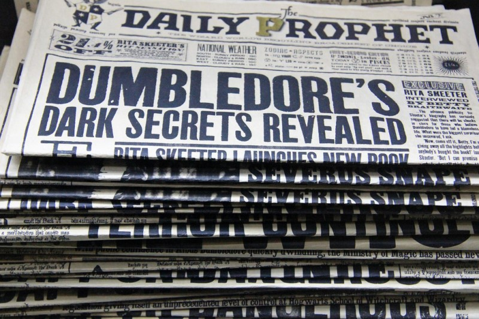
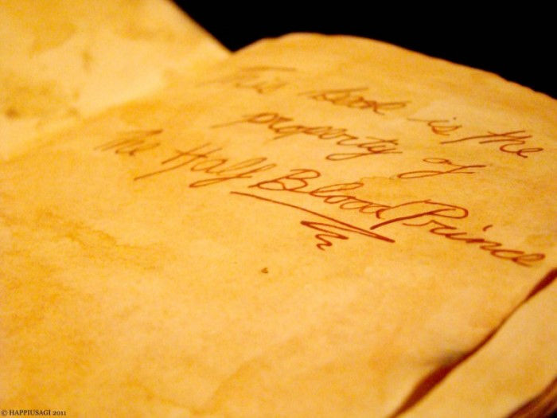

In 2014 in a viral Facebook survey, 21% of the participants put the “Harry Potter” series by J.K. Rowling on the list of books that have stayed with them - making it what some have called “the most influential book in the world.” Harry Potter topped such standards as Harper Lee’s “To Kill a Mockingbird,” J.R.R Tolkien’s “The Lord of the Rings” and … the Bible.
This shouldn’t come as much of a surprise — the responses likely came from readers of a generation that pretty much grew up with the Harry Potter series. While the Millennials are being pounded with adjectives like narcissistic, broke, less religious and spendthrift, a study published in the Journal of Applied Psychology may provide reason for pause.
Researchers from several European universities found that reading Harry Potter may make young people more tolerant, that it improves attitudes toward stigmatized groups, such as immigrants, gays and refugees.
We can draw clear parallels between the magical world with its strict social hierarchies and resulting prejudices and our society – “Muggles”, “Half-bloods” and “Mud-bloods” as well as Giants, Goblins and House-elves are discriminated against, while Harry has meaningful contact with these characters belonging to stigmatized groups, tries to understand them and fights for a world free of social inequalities.
The series has helped raise the children of our generation by instilling in them some of the basic moral conceptions of right and wrong, and the lessons identified in the series included diversity and acceptance, political tolerance and equality. Through surveys of 1,141 college students in the United States, Harry Potter fans were found to be more tolerant, but also to be less authoritarian, to be more opposed to the use of violence and torture, to be less cynical, and to evince a higher level of political efficacy. They are also more liberal, with a more negative view of the Bush years. The surveyors have even wondered whether the series had anything to do with the election of Barack Obama in 2008, considering the millennials’ overwhelming support for Mr. Obama in the vote.
More recently, after the 2016 Presidential election, the younger generation all across the nation are taking heart from the storyline even more, equating the present situation to Voldemort’s rise to power and his supporters’ attitude towards women and minority to those of the Death Eaters’ actions, and hoping for a more positive ending. Whether that will happen or not, only time can tell, but the Harry Potter series is, without a doubt, one of the great cultural events of our generation’s time.
[Citation available on request.]